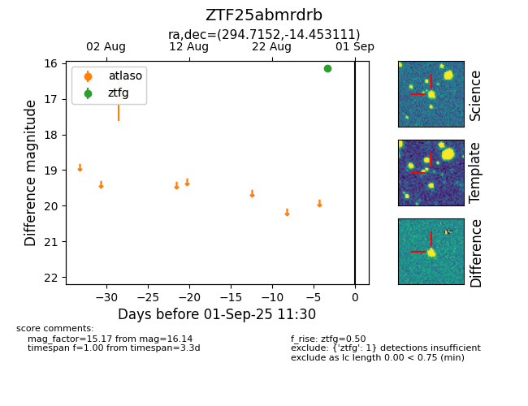

FINK: ZTF25abmrdrb
Lasair: ZTF25abmrdrb
ALeRCE: ZTF25abmrdrb
ZTF25abmrdrb (ztf,fink)
equatorial (ra, dec) = (294.7152,-14.45311)
galactic (l, b) = (25.0372,-16.90988)

last atlaso=16.96, ztfg=16.14
1 atlaso, 2 ztfg detections